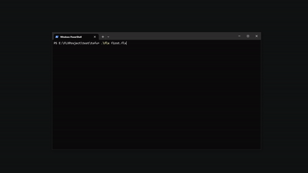

FLX Documentation
Primeros pasos
Este apartado muestra la estructura mínima necesaria para ejecutar un proyecto FLX.
El objetivo es comprender cómo se organiza un proyecto, cómo se relacionan sus archivos y cómo ejecutar un primer runtime funcional.
Estructura mínima
Un proyecto FLX puede comenzar con muy pocos archivos.
my-first-flx/
│
├── first.flx
├── world.json
├── tofu.json
└── tofu.js
Cada archivo cumple una función concreta dentro del runtime.
Archivo de proyecto
Todo proyecto comienza con un archivo .flx.
Este archivo define los metadatos del proyecto, los puntos de entrada del proyecto y el objeto raíz.
name=My first FLX
version=1.0
engine=0.3.0
root=world
title=My first FLX
No hemos declarado machine ni input.mapping. FLX utilizará sus configuraciones predeterminadas.
Objeto raíz
El objeto raíz organiza el resto de objetos y lógica activa del runtime.
En este ejemplo, el objeto raíz representa el mundo que contiene un único objeto: un bloque de tofu.
{
"$schema": "https://flxforge.github.io/FLXEngine/schemas/object.schema.json",
"children": {
"tofu": "tofu"
}
}
Objeto
Los objetos definen datos y propiedades utilizadas durante la ejecución.
Un objeto puede contener:
- Forma
- Movimiento
- Scripts
- Colisiones
- Datos personalizados
{
"$schema": "https://flxforge.github.io/FLXEngine/schemas/object.schema.json",
"control" :{
"player": 1
},
"origin": {
"x": 311,
"y": 228
},
"size": {
"width": 18,
"height": 24
},
"visual": {
"color": "white",
"representation": [
{
"primitive": "rectangle"
}
]
},
"mechanics": {
"type": "direct",
"motion": {
"speed": {
"start": 120
}
}
},
"behavior": {
"scripts": [ "tofu" ]
}
}
Scripts
Los scripts utilizan JavaScript para definir comportamiento.
Durante el runtime, FLX ejecuta automáticamente determinadas funciones del ciclo de vida.
/// <reference path="https://flxforge.github.io/FLXEngine/scripts/flx.d.ts" />
const MOVE = direction(0);
function motion(tofu) {
move_horizontal(tofu, input_direction(tofu, MOVE, HORIZONTAL));
move_vertical(tofu, input_direction(tofu, MOVE, VERTICAL));
}
Ejecución
Una vez definidos los archivos del proyecto,
el runtime puede ejecutarse indicando el archivo
.flx.
.\flx validate first.flx
FLX validará la estructura del proyecto y sus recursos.
.\flx first.flx
Si todo está correctamente configurado, el runtime cargará el objeto raíz, inicializará los objetos y comenzará el ciclo de ejecución.
FLX abrirá una ventana utilizando la machine predeterminada. Verás el tofu y podrás moverlo con WASD, las flechas de dirección o un joystick.

¡¡¡Felicitaciones!!!, has creado tu primer proyecto FLX.
Ya tienes un mundo, un objeto y comportamiento ejecutándose en FLX.
Prueba a cambiar white por otro color, modifica width y height, o cambia speed.start. Guarda los archivos y vuelve a ejecutar el proyecto.